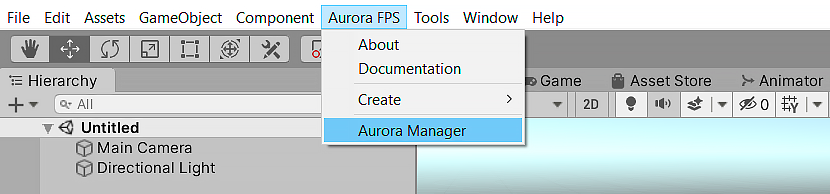
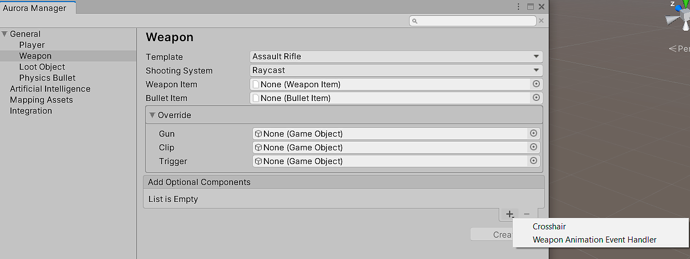
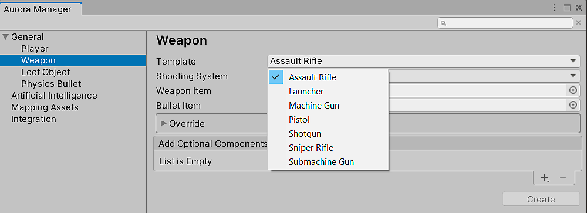

Create Weapon
To create a weapon, use the Aurora Manager window.
Aurora FPS / Aurora Manager

Select Weapon section.

Configure weapon want you want to create.

| Field | Description |
|---|---|
| Template | Select the type of weapon that is closest to the weapon you want to create. Created weapons will already have animations related to this type, but you can always replace them with your own if you want. |
| Shooting System | Raycast: lightweight shooting system, does not require large costs on computer resources, shoots a physical ray. Physics: realistic shooting system that shoots bullets, each of which is processed individually in physics. More demanding on resources (optimized through the use of built- in object pool system). |
| Weapon Item | Weapon Item asset for this weapon. |
| Bullet Item | Type of bullet that the weapon will use for fire. |
| Override | Contains objects (mesh) to override, depending on the template they can vary. When you redefine these objects, you replace the standard objects on new ones , this is a kind of auto Retargeting and built- in animations will work on your created weapons. |
| Optional Components | You can also add various optional components to the weapon if desired (depending on the template , some of the optional components may already be pre-installed in the weapon). |
Press Create button. After this new weapon will be created at the scene.
Note
Make this weapon as Player camera child. Player / FPCamera / CamearInstance